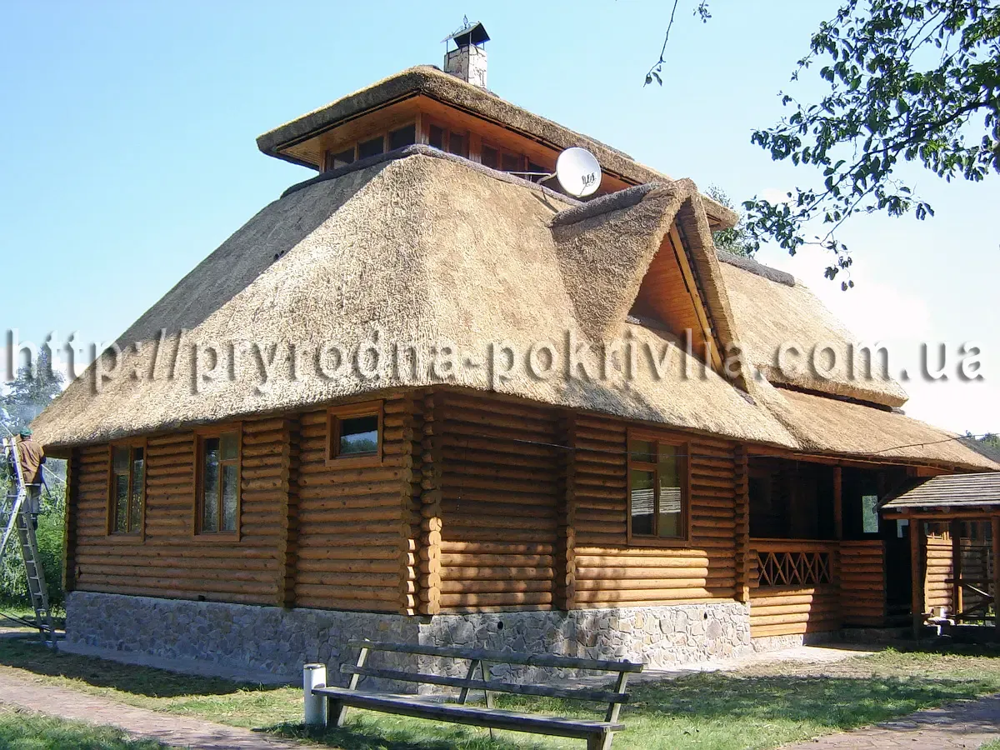

Про компанію
«Природна покрівля» — команда, яка створює натуральні, стильні та довговічні покрівлі з очерету.

Понад 20 років досвіду
Компанія була заснована восени 2005 року. За цей час ми реалізували багато проєктів з накриття будинків і лазень, побудували та накрили різноманітні альтанки, а також декорували велику кількість інтер’єрів кафе та ресторанів в українському народному стилі.
У 2020 році, у зв’язку зі складною ситуацією в країні, ми були змушені шукати нові ринки за кордоном і фактично вийшли на міжнародний рівень. Більшість наших майстрів вирушили до Нідерландів у творчих пошуках, де мали за мету не лише продовжити свою справу, а й популяризувати українські традиції покрівельного мистецтва за межами Батьківщини.
У 2022 році частина наших спеціалістів повернулася додому, щоб захистити рідну Україну від скаженої орди. Сьогодні ми докладаємо всіх зусиль, щоб зберегти та розвинути унікальне ремесло очеретяної покрівлі, виховуючи нове покоління майстрів.
Ми прагнемо передати наш досвід молодим і талановитим людям, які готові навчатися та розвиватися в цій сфері.

Розвиваємо майстерність
Наша компанія надає можливість працювати в Україні та випробувати свої сили на міжнародному ринку. Майстри, які опанують професію, після закінчення війни зможуть вирушити до Нідерландів для здобуття цінного досвіду та реалізації свого потенціалу.
Ми працюємо офіційно, з повною реєстрацією та дотриманням трудового законодавства країни перебування. Це забезпечує нашим співробітникам стабільність, соціальні гарантії та можливість професійного розвитку.
Якщо ви молоді, амбітні, готові навчатися та працювати в дружньому колективі, запрошуємо приєднатися до нашої команди. Разом ми відроджуємо традиційні технології та створюємо якісне, довговічне й екологічне покриття, яке цінується не лише в Україні, а й у Європі.

Хочете долучитися до команди?
Якщо вам близька ручна робота, природні матеріали та бажання розвивати ремесло — зв’яжіться з нами.